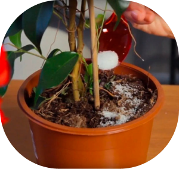
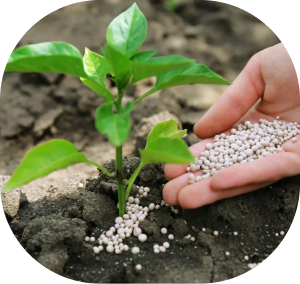
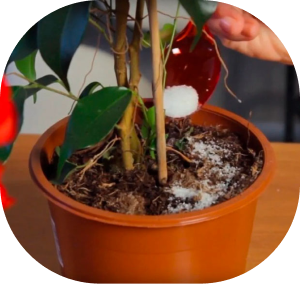
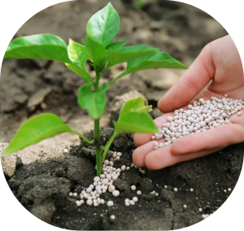

Подкормка
Спитой кофе:
Спитой кофе также очень часто используется для подкормки не только комнатных цветов, но и тех, что растут на улице. Подготовить данное удобрение проще простого. Нужно лишь сварить натуральный кофе, и после того как жидкость будет выпита, гущу не выбрасывать, а перемешать с почвой, находящейся в горшке. Результатом таких действий станет то, что почва будет более легкой и рыхлой. А еще произойдет повышение кислотности субстрата и увеличение количества кислорода.
Сахарный песок:
Дело в том, что сахарный песок распадается на глюкозу и фруктозу. Последнее вещество является бесполезным для растений, а вот глюкоза очень даже
нужна им. Дело в том, что она является источником энергии, которая расходуется растением при дыхании, во время поглощения минеральных и иных
полезных веществ и так далее. А также глюкоза способствует быстрому росту цветов, так как принимает непосредственное участие в образовании сложных
органических молекул.
Для приготовления такого рода подкормки вам понадобится взять 500 граммов чистой воды и всыпать в нее полную большую ложку сахарного песка.
Все хорошенько размешайте. Можно сделать и намного проще. Просто почву в цветочном горшке посыпают сухим сахаром, а затем поливают растение.
Зола:
Большинство начинающих цветоводов не расценивают золу, как полноценное удобрение и это не правильно. Дело в том, что в ней находятся такие нужные
растению вещества, как: фосфор, калий, кальций, цинк, магний, железо и сера. Причем стоит отметить, что первые два микроэлемента имеют
легкодоступную форму для цветов и потому зола является просто превосходным удобрением для растений.
Подкармливать цветы золой достаточно просто, для этого ее надо перемешать с почвой во время пересаживания растения. Тем самым земля не только
обогатиться питательными веществами, но и обеззаразится. Потому-то если при пересадке произошло повреждение корневой системы, то она точно не начнет гнить.
Лук:
Лук так же достаточно широко применяется для приготовления удобрений. Для этого используется его шелуха, в которой содержится огромное количество так
нужных всем без исключениям растениям полезных микроэлементов. Из шелухи готовится «луковый коктейль».
Приготовить такое удобрение очень просто, но следует учитывать, что хранить его ни в коем случае нельзя. Итак, вам понадобится шелуха от лука
(50 гр.) и горячая вода (2 л.). Перемешайте данные ингредиенты между собой в кастрюльке и дайте смеси закипеть. После того как жидкость покипит
в течение 10 минут, ее следует снять с огня и дать постоять не менее 3 ч. Процеженным остывшим отваром надо опрыскать цветы.
Дрожжи:
Из дрожжей можно сделать превосходное ростостимулирующее удобрение. И это обусловлено тем, что в данном веществе содержатся ауксины, витамины группы
В, фитогормоны и так далее, которые значительно ускоряют рост цветов. А содержащиеся гормоны цитокинины, участвующие в регулировке деления и
дифференциации клеток, также оказывают благотворное влияние на цветы.
Для приготовления питательного раствора из дрожжей вам понадобятся прессованные дрожжи (10 граммов), сахарный песок (1 столовая ложка) и теплая вода
(1 л.). Прессованные дрожжи можно заменить сухими гранулированными. Тогда вам следует взять сухие дрожжи (10 граммов), сахарный песок (3 столовые
ложки) и воду (10 л.). Полученному раствору в обоих случаях надо дать настоятся в течение 2 ч. После этого в воду добавляют немного раствора и
поливают им растение (примерная пропорция 5:1).
Аквариумная вода:
Удобрения, приобретаемые в магазинах, способна заменить простая вода из аквариума. Дело в том, что в ней содержится довольно большое количество веществ, обладающих возможностью прекрасно стимулировать рост растений. Также эта вода достаточно мягкая и обладает нейтральным рН. Однако ей можно поливать растения лишь в весенне-летний период, когда они достаточно активно растут. В остальное же время такое удобрение лучше не применять для подкормки.
 


